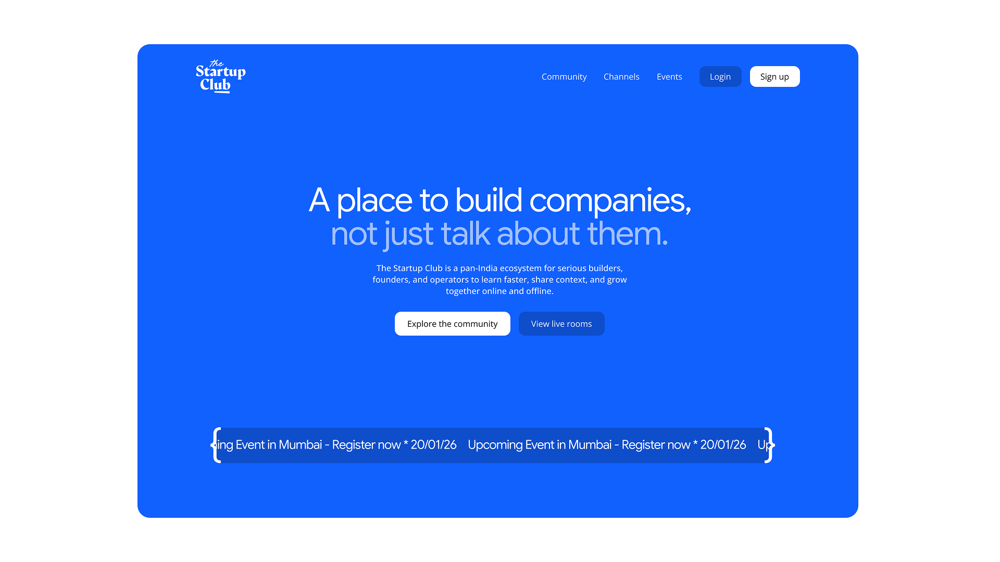
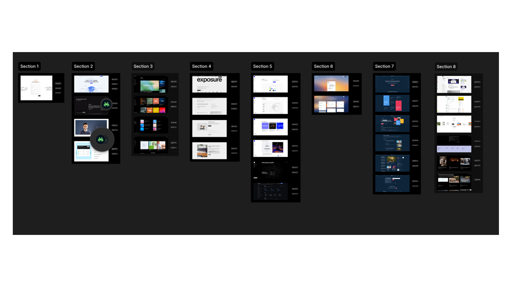
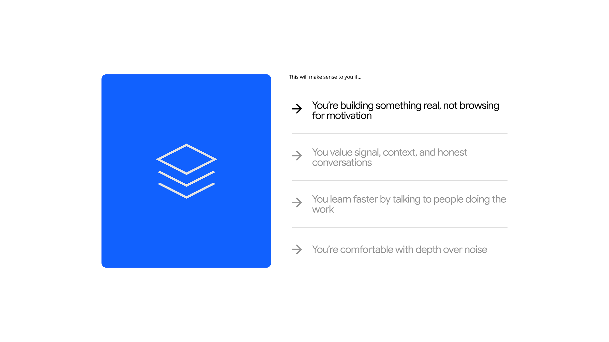
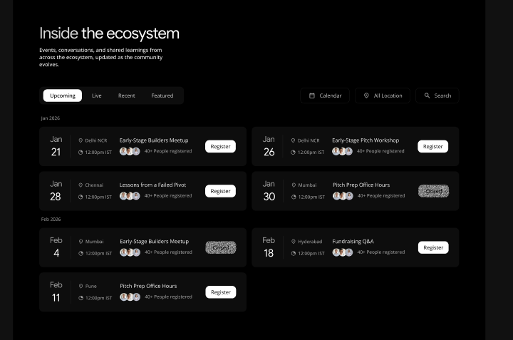
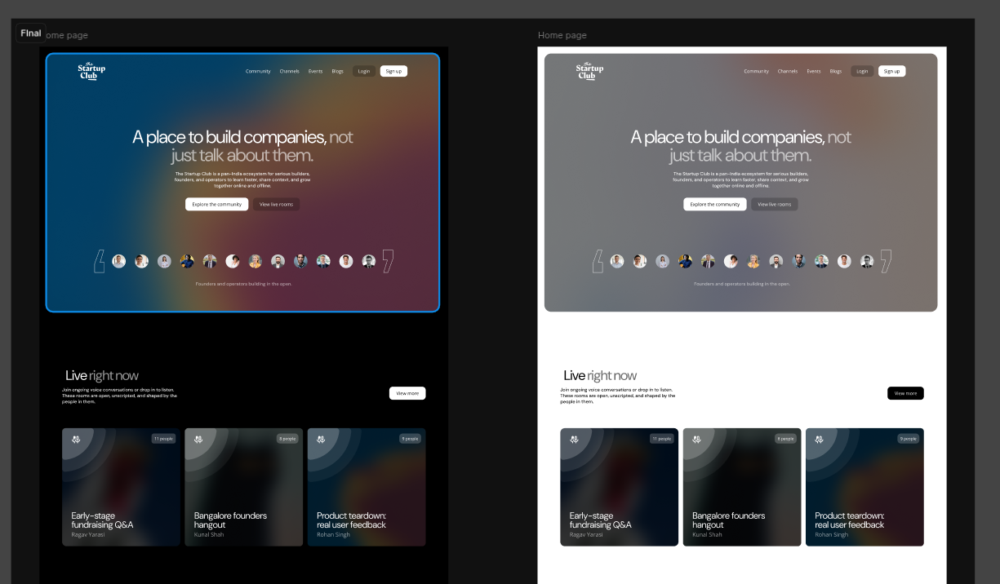
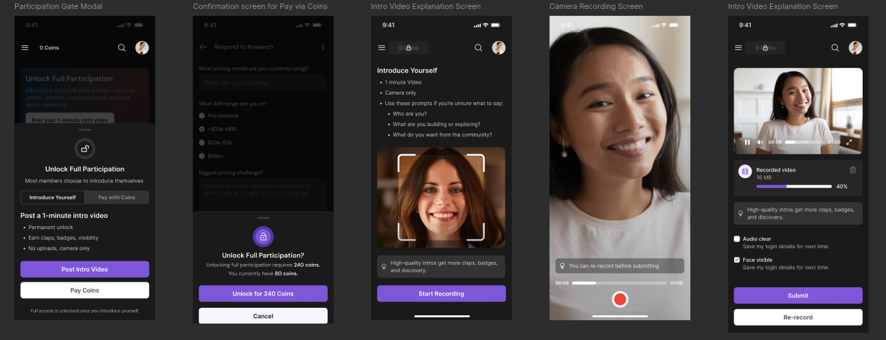
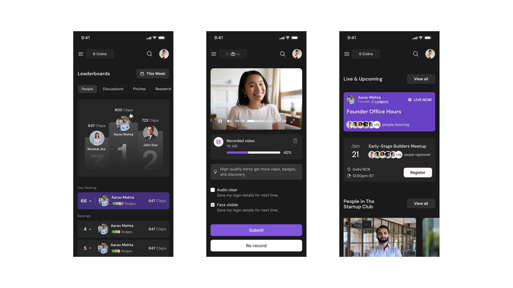
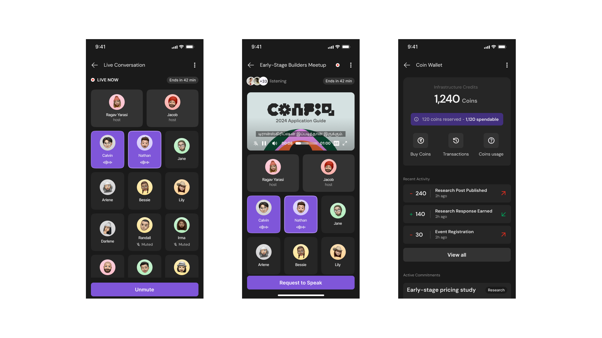
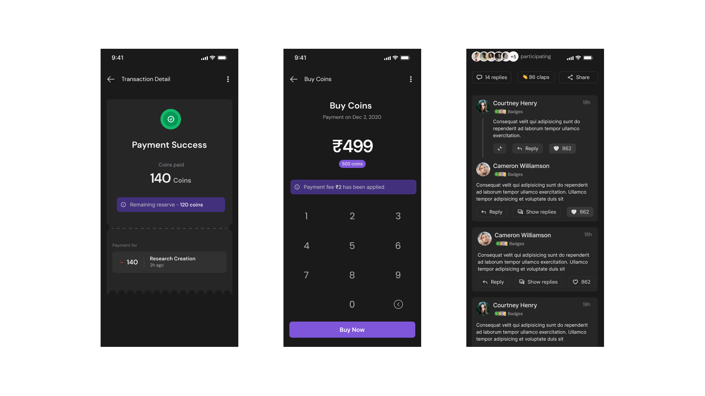

The Startup Club is a concept platform designed for founders, operators, and ambitious builders who learn best through conversations, collaboration, and shared experiences.
The project explores how community, content, events, and reputation systems can be brought together into a single ecosystem that encourages meaningful participation rather than passive consumption.
The Problem
Most professional communities struggle with the same issue:
People join, consume content, and leave.
Valuable knowledge often remains fragmented across social platforms, group chats, and event networks, making it difficult for builders to discover relevant insights or meaningful connections.
The challenge was to design a platform that rewards contribution, encourages participation, and creates long-term value for members.

A Community Built Around Participation
Instead of optimizing for views, likes, or follower counts, the platform focuses on active contribution.
Members can participate in discussions, attend events, share research, join live conversations, and earn recognition through meaningful engagement.
The goal is to create an environment where people learn by doing rather than simply consuming information.

Designing the Platform
The platform combines several interconnected experiences:
- Community discovery
- Live conversations
- Founder events
- Research sharing
- Reputation systems
- Member profiles
- Knowledge exchange
Each area was designed as part of a larger ecosystem rather than a collection of isolated features.

Identity & Visual Direction
The visual language balances professionalism with warmth.
A dark interface establishes focus while vibrant gradients introduce energy and optimism, reflecting the ambitious nature of startup communities.
Typography remains clean and accessible, allowing content and conversations to remain the primary focus.

Community Experience
The platform experience begins with discovery.
Users can explore conversations, upcoming events, active members, and community activity through a centralized dashboard designed to surface relevant opportunities for participation.
The focus was on helping users quickly understand where value exists and how they can contribute.

Reputation Through Contribution
Rather than relying solely on follower counts, the platform introduces contribution-based recognition.
Members earn visibility through discussions, research contributions, event participation, and community engagement.
This creates incentives that align with helping others rather than optimizing for attention.

Conversations That Matter
Live conversations form a core part of the experience.
Members can join founder discussions, operator sessions, office hours, and community-led events in real time.
The interface focuses on clarity, participation, and reducing friction during active conversations.

Mobile Experience
A significant portion of community engagement happens on mobile devices.
The mobile experience was designed around quick participation, allowing members to join conversations, discover events, track reputation, and contribute from anywhere.
The focus remained on speed, clarity, and accessibility.

Key Design Principles
Encourage Participation
Reduce the gap between consuming content and contributing to conversations.
Reward Value
Recognition should emerge from meaningful actions rather than vanity metrics.
Surface Context
Help members understand who people are, what they are building, and why their perspectives matter.
Build Trust
Create an environment where expertise, consistency, and contribution become visible over time.
Outcome
The Startup Club explores what a modern community platform could look like when designed around builders rather than audiences.
By combining conversations, events, reputation systems, and knowledge sharing into a cohesive experience, the project investigates how digital communities can create deeper engagement and more meaningful connections.
Reflection
This project was an opportunity to think beyond individual screens and design an ecosystem.
The most interesting challenge was balancing community growth with community quality—creating systems that encourage participation while maintaining signal over noise.
The result is a concept that explores how technology can support ambitious people learning and building together.